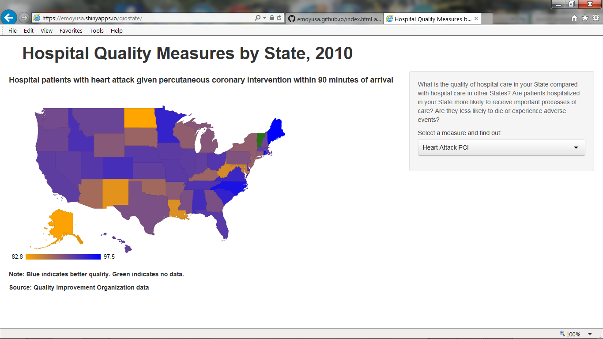
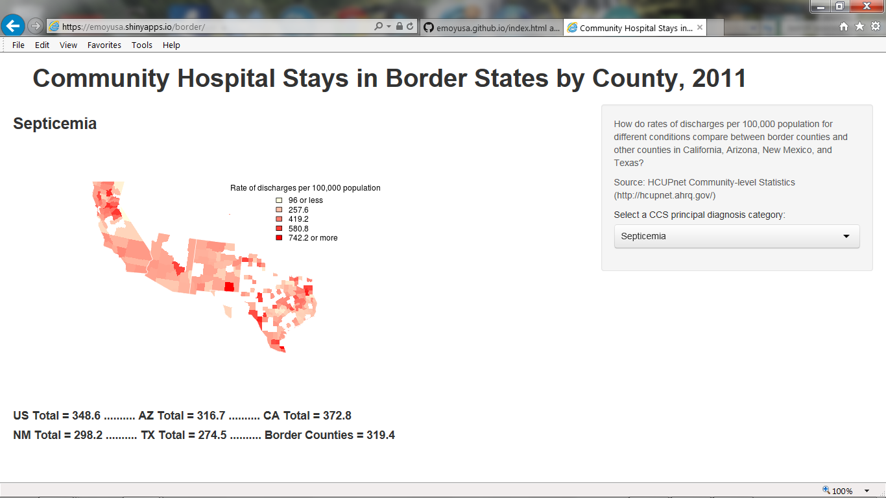

Welcome to My GitHub Pages
I have been working on a bunch of different health care apps and having difficulty keeping track of the various places on which they are stored. This site is to help me keep track of them and to make it easier to share them with others.
Presentations
A Prezi on Innovative Methods for Asian Americans, Native Hawaiians, and Pacific Islanders in the National Healthcare Reports that was presented at an NIH conference
A Prezi on Measuring Disparities in Patients Safety that was presented at a Maryland patient safety conference
A Prezi on Agent-Based Models of Health Disparities that was part of an Academy Health Innovations Station presentation
A Slidify presentation on Hospital Quality Measures by State that was part of a project for a Johns Hopkins University Coursera course on Developing Data Products
A Prezi on Systems Science Simulation & Knowledge Translation and Dissemination that was presented to Academy Health staff as part of my Innovator-in-Residence
Maps
An ArcGIS story-telling app mapping Correlates of Overall Health Care Quality that was a project for a Pennsylvania State University Coursera course on Maps and the Geospatial Revolution
A Shiny app mapping Hospital Quality Measures by State that was part of a project for a Johns Hopkins University Coursera course on Developing Data Products 
A Shiny app mapping Community Hospital Stays in Border States by County that was developed for the U.S.-Mexico Border Health Commission 
Models
A netlogo project consisting of 5 models that sequentially build Models of Health Disparities; while running the models requires Applets, info on the models as well model code can be copied
Model of Health Disparities Version 2: This new model uses real data to quantify transitions from health to having risk factors (smoking, obesity, and sedentary lifestyle) to death
Innovator-in-Residence, July 7 - August 8 2014
Comments or Contact
If you have comments or suggestions, send them to me at emoyusa@gmail.com